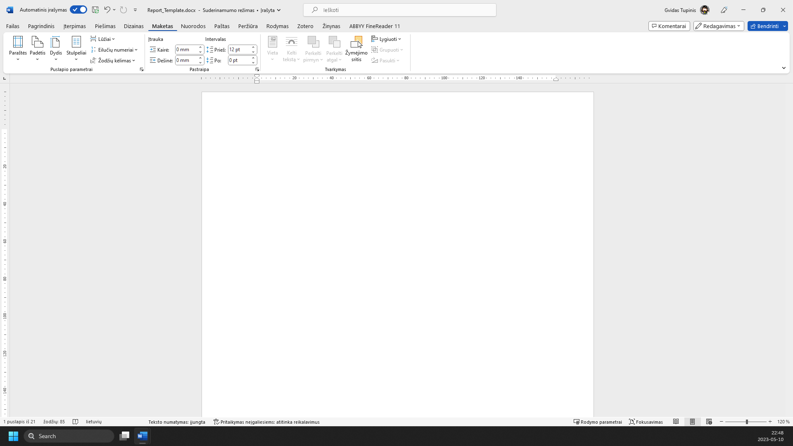
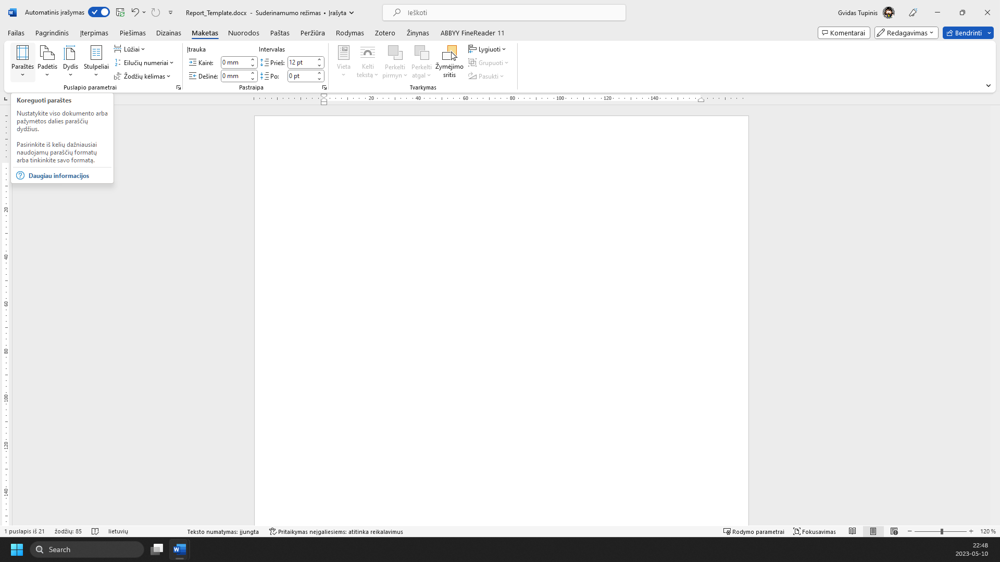
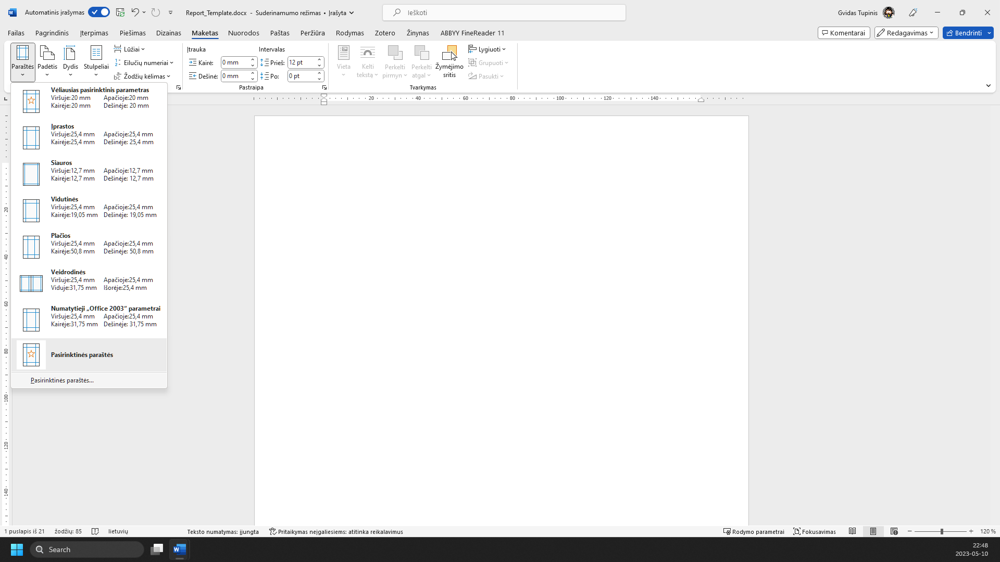
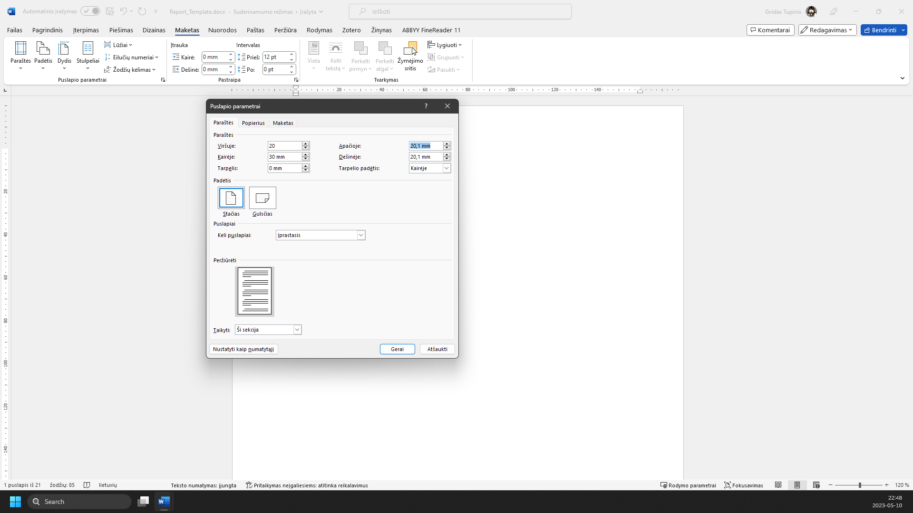
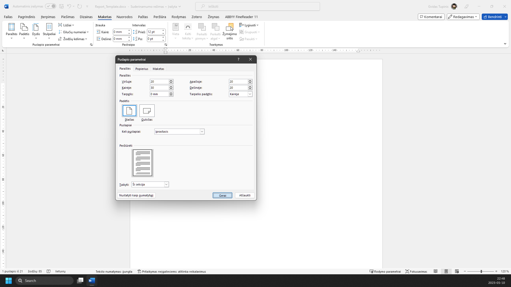
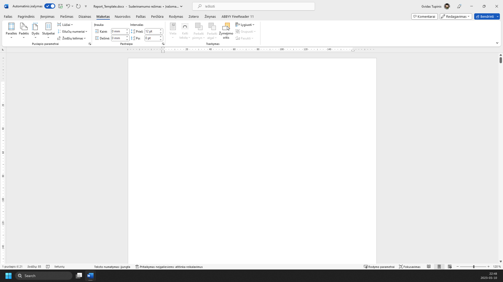

RAŠTO DARBO RENGIMAS
Paraščių parametrai
1 žingsnis iš 6
1.
Pasirinkite meniu ‘Maketas’

2.
Įrankių juostoje pasirinkite ‘Paraštės’

3.
Išskleidžiamame meniu pasirinkite ‘Pasirinktinės paraštės...’

4.
Nustatykite reikiamas paraštes: viršuje, dešinėje ir apačioje 20mm, kairėje 30mm (arba 20mm) pagal surišimą

5.
Spauskite mygtuką ‘Gerai’

6.
Dokumento paraštės nustatytos

Žaliai apibrėžta vieta rodo, kur paspausti. Vaizdą gali padidinti naršyklės mastelio valdikliu. Žingsnius taip pat keičia klaviatūros rodyklės.